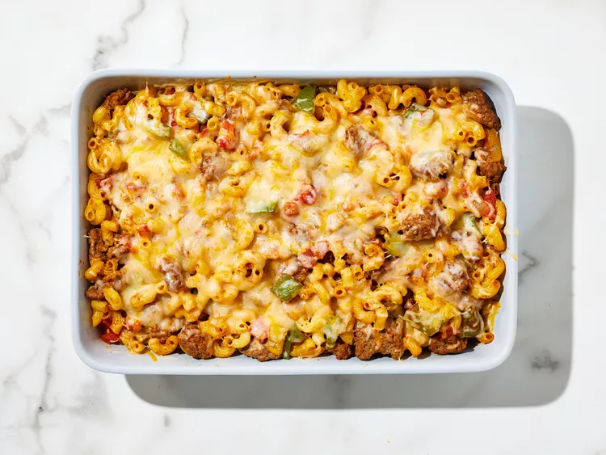

Chili Mac

Description
This chili mac adds a little spice to a comfort food favorite by sprinkling on
Sargento Shredded Reduced Fat 4 Cheese Mexican Cheese.
Ingredients
- 1 pound ground beef or turkey
- 1 medium onion, chopped
- 1 green bell pepper, chopped
- 1 (14.5 ounce) can Mexican or chili-style
stewed tomatoes, undrained
- ½ cup water
- 1 (1.25 ounce) package taco seasoning mix
- 2 cups elbow macaroni or small shells,
cooked and drained
- 2 cups Sargento ® Shredded Reduced Fat 4
Cheese Mexican Cheese, divided
Steps
- Preheat the oven to 375 degrees F (190 degrees C).
- Cook ground beef, onion, and bell pepper in a large skillet over medium heat
until beef is crumbly and no longer pink, about 5 minutes; pour off drippings.
- Add tomatoes, water, and taco seasoning; simmer, stirring occasionally, for 5 minutes.
Remove from heat. Stir cooked pasta into meat mixture until combined.
- Spoon 3 cups meat mixture into an 11x7-inch baking dish. Sprinkle with 1 cup cheese;
top with remaining meat mixture. Cover with aluminum foil.
- Bake in the preheated oven for 30 minutes. Remove foil; sprinkle with remaining cheese.
Continue baking until cheese is melted, about 5 minutes.